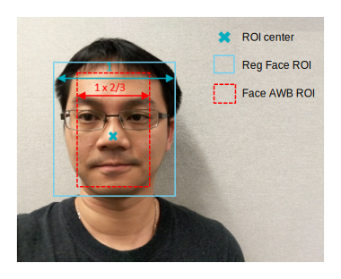
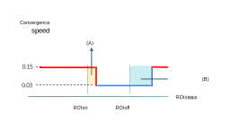

The FA SA module selects the proper face ROI information from uploaded images.
To collect face ROI information, the user uploads one or more face-dominant
images and the module selects the face ROI information, as illustrated below:

- Reduces the regular face ROI width (x) and height (y) using the
ROIXScale and ROIYScale parameters to avoid collecting misleading background BG
stats
- If there are multiple faces in the image, choose the biggest
face for collecting the BG stats
- If another face (ROI) size is bigger than the current one, the
new biggest face replaces the original one
If a face ROI is detected, AWB processing uses a slower convergence speed for face AWB to
avoid unstable face ROI input, as illustrated in the following diagram.
Figure : (A) When ROI is detected, convergence speed will keep original convergence speed
for few frames; (B) After ROI is gone, convergence speed will keep face AWB
convergence speed for a few frames
